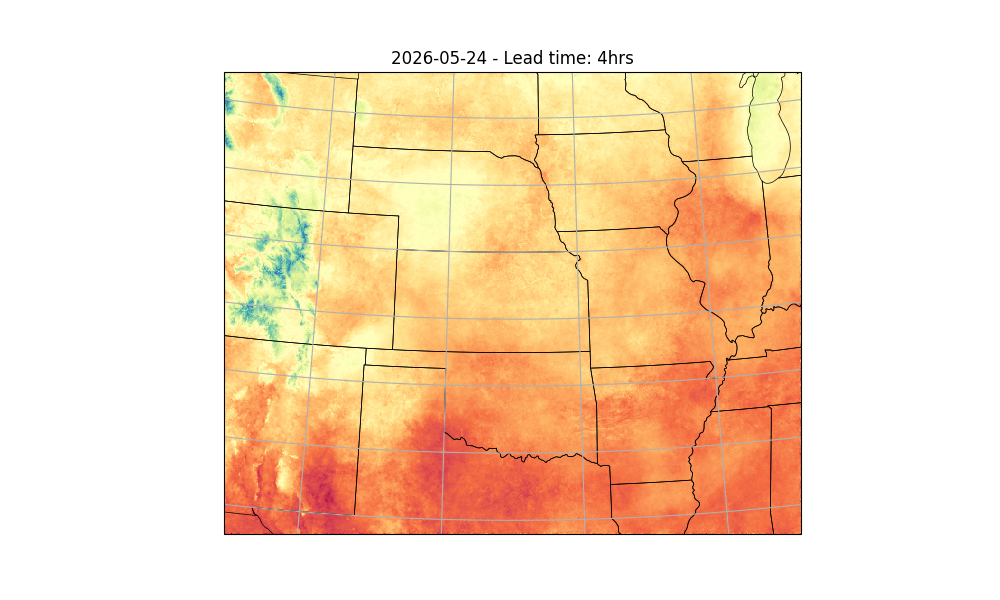

Note
Go to the end to download the full example code.
Running StormCast Inference#
Basic StormCast inference workflow.
This example will demonstrate how to run a simple inference workflow to generate a basic determinstic forecast using StormCast. For details about the stormcast model, see
# /// script
# dependencies = [
# "earth2studio[data,stormcast] @ git+https://github.com/NVIDIA/earth2studio.git@0.15.0",
# "cartopy",
# ]
# ///
Set Up#
All workflows inside Earth2Studio require constructed components to be
handed to them. In this example, let’s take a look at the most basic:
earth2studio.run.deterministic().
Thus, we need the following:
Prognostic Model: Use the built in StormCast Model
earth2studio.models.px.StormCast.Datasource: Pull data from the HRRR data api
earth2studio.data.HRRR.IO Backend: Let’s save the outputs into a Zarr store
earth2studio.io.ZarrBackend.
StormCast also requires a conditioning data source. We use a forecast data source here,
GFS_FX earth2studio.data.GFS_FX which is the default, but a non-forecast
data source such as ARCO could also be used with appropriate time stamps.
from datetime import datetime, timedelta
from loguru import logger
from tqdm import tqdm
logger.remove()
logger.add(lambda msg: tqdm.write(msg, end=""), colorize=True)
import os
os.makedirs("outputs", exist_ok=True)
from dotenv import load_dotenv
load_dotenv() # TODO: make common example prep function
from earth2studio.data import HRRR
from earth2studio.io import ZarrBackend
from earth2studio.models.px import StormCast
# Load the default model package which downloads the check point from NGC
# Use the default conditioning data source GFS_FX
package = StormCast.load_default_package()
model = StormCast.load_model(package)
# Create the data source
data = HRRR()
# Create the IO handler, store in memory
io = ZarrBackend()
Execute the Workflow#
With all components initialized, running the workflow is a single line of Python code. Workflow will return the provided IO object back to the user, which can be used to then post process. Some have additional APIs that can be handy for post-processing or saving to file. Check the API docs for more information.
For the forecast we will predict for 4 hours
import earth2studio.run as run
nsteps = 4
today = datetime.today() - timedelta(days=1)
date = today.isoformat().split("T")[0]
io = run.deterministic([date], nsteps, model, data, io)
print(io.root.tree())
2026-05-25 23:44:06.992 | INFO | earth2studio.run:deterministic:78 - Running simple workflow!
2026-05-25 23:44:06.992 | INFO | earth2studio.run:deterministic:85 - Inference device: cuda
Fetching HRRR data: 0%| | 0/99 [00:00<?, ?it/s]
2026-05-25 23:44:07.904 | DEBUG | earth2studio.data.hrrr:fetch_array:484 - Fetching HRRR grib file: noaa-hrrr-bdp-pds/hrrr.20260524/conus/hrrr.t00z.wrfnatf00.grib2 65916908-1067967
Fetching HRRR data: 0%| | 0/99 [00:00<?, ?it/s]
2026-05-25 23:44:07.925 | DEBUG | earth2studio.data.hrrr:fetch_array:484 - Fetching HRRR grib file: noaa-hrrr-bdp-pds/hrrr.20260524/conus/hrrr.t00z.wrfnatf00.grib2 90843617-2440706
Fetching HRRR data: 0%| | 0/99 [00:00<?, ?it/s]
2026-05-25 23:44:07.946 | DEBUG | earth2studio.data.hrrr:fetch_array:484 - Fetching HRRR grib file: noaa-hrrr-bdp-pds/hrrr.20260524/conus/hrrr.t00z.wrfnatf00.grib2 17983695-2351436
Fetching HRRR data: 0%| | 0/99 [00:00<?, ?it/s]
2026-05-25 23:44:07.968 | DEBUG | earth2studio.data.hrrr:fetch_array:484 - Fetching HRRR grib file: noaa-hrrr-bdp-pds/hrrr.20260524/conus/hrrr.t00z.wrfnatf00.grib2 106068713-2456972
Fetching HRRR data: 0%| | 0/99 [00:00<?, ?it/s]
2026-05-25 23:44:07.990 | DEBUG | earth2studio.data.hrrr:fetch_array:484 - Fetching HRRR grib file: noaa-hrrr-bdp-pds/hrrr.20260524/conus/hrrr.t00z.wrfnatf00.grib2 66984875-1051828
Fetching HRRR data: 0%| | 0/99 [00:00<?, ?it/s]
2026-05-25 23:44:08.010 | DEBUG | earth2studio.data.hrrr:fetch_array:484 - Fetching HRRR grib file: noaa-hrrr-bdp-pds/hrrr.20260524/conus/hrrr.t00z.wrfsfcf00.grib2 45237331-2381615
Fetching HRRR data: 0%| | 0/99 [00:00<?, ?it/s]
2026-05-25 23:44:08.020 | DEBUG | earth2studio.data.hrrr:fetch_array:484 - Fetching HRRR grib file: noaa-hrrr-bdp-pds/hrrr.20260524/conus/hrrr.t00z.wrfnatf00.grib2 329311014-1716796
Fetching HRRR data: 0%| | 0/99 [00:00<?, ?it/s]
2026-05-25 23:44:08.041 | DEBUG | earth2studio.data.hrrr:fetch_array:484 - Fetching HRRR grib file: noaa-hrrr-bdp-pds/hrrr.20260524/conus/hrrr.t00z.wrfnatf00.grib2 121025188-2468646
Fetching HRRR data: 0%| | 0/99 [00:00<?, ?it/s]
2026-05-25 23:44:08.063 | DEBUG | earth2studio.data.hrrr:fetch_array:484 - Fetching HRRR grib file: noaa-hrrr-bdp-pds/hrrr.20260524/conus/hrrr.t00z.wrfsfcf00.grib2 0-549053
Fetching HRRR data: 0%| | 0/99 [00:00<?, ?it/s]
2026-05-25 23:44:08.078 | DEBUG | earth2studio.data.hrrr:fetch_array:484 - Fetching HRRR grib file: noaa-hrrr-bdp-pds/hrrr.20260524/conus/hrrr.t00z.wrfnatf00.grib2 51243169-1104106
Fetching HRRR data: 0%| | 0/99 [00:00<?, ?it/s]
2026-05-25 23:44:08.098 | DEBUG | earth2studio.data.hrrr:fetch_array:484 - Fetching HRRR grib file: noaa-hrrr-bdp-pds/hrrr.20260524/conus/hrrr.t00z.wrfnatf00.grib2 52347275-1067649
Fetching HRRR data: 0%| | 0/99 [00:00<?, ?it/s]
2026-05-25 23:44:08.118 | DEBUG | earth2studio.data.hrrr:fetch_array:484 - Fetching HRRR grib file: noaa-hrrr-bdp-pds/hrrr.20260524/conus/hrrr.t00z.wrfnatf00.grib2 60989065-2406272
Fetching HRRR data: 0%| | 0/99 [00:00<?, ?it/s]
2026-05-25 23:44:08.139 | DEBUG | earth2studio.data.hrrr:fetch_array:484 - Fetching HRRR grib file: noaa-hrrr-bdp-pds/hrrr.20260524/conus/hrrr.t00z.wrfnatf00.grib2 63395337-1093690
Fetching HRRR data: 0%| | 0/99 [00:00<?, ?it/s]
2026-05-25 23:44:08.159 | DEBUG | earth2studio.data.hrrr:fetch_array:484 - Fetching HRRR grib file: noaa-hrrr-bdp-pds/hrrr.20260524/conus/hrrr.t00z.wrfnatf00.grib2 70284370-2227803
Fetching HRRR data: 0%| | 0/99 [00:00<?, ?it/s]
2026-05-25 23:44:08.180 | DEBUG | earth2studio.data.hrrr:fetch_array:484 - Fetching HRRR grib file: noaa-hrrr-bdp-pds/hrrr.20260524/conus/hrrr.t00z.wrfnatf00.grib2 9272979-1140058
Fetching HRRR data: 0%| | 0/99 [00:00<?, ?it/s]
2026-05-25 23:44:08.200 | DEBUG | earth2studio.data.hrrr:fetch_array:484 - Fetching HRRR grib file: noaa-hrrr-bdp-pds/hrrr.20260524/conus/hrrr.t00z.wrfnatf00.grib2 81842883-1046343
Fetching HRRR data: 0%| | 0/99 [00:00<?, ?it/s]
2026-05-25 23:44:08.220 | DEBUG | earth2studio.data.hrrr:fetch_array:484 - Fetching HRRR grib file: noaa-hrrr-bdp-pds/hrrr.20260524/conus/hrrr.t00z.wrfnatf00.grib2 7812236-1460743
Fetching HRRR data: 0%| | 0/99 [00:00<?, ?it/s]
2026-05-25 23:44:08.240 | DEBUG | earth2studio.data.hrrr:fetch_array:484 - Fetching HRRR grib file: noaa-hrrr-bdp-pds/hrrr.20260524/conus/hrrr.t00z.wrfnatf00.grib2 75844877-2424985
Fetching HRRR data: 0%| | 0/99 [00:00<?, ?it/s]
2026-05-25 23:44:08.262 | DEBUG | earth2studio.data.hrrr:fetch_array:484 - Fetching HRRR grib file: noaa-hrrr-bdp-pds/hrrr.20260524/conus/hrrr.t00z.wrfnatf00.grib2 24038196-1092931
Fetching HRRR data: 0%| | 0/99 [00:00<?, ?it/s]
2026-05-25 23:44:08.281 | DEBUG | earth2studio.data.hrrr:fetch_array:484 - Fetching HRRR grib file: noaa-hrrr-bdp-pds/hrrr.20260524/conus/hrrr.t00z.wrfnatf00.grib2 182069328-1301135
Fetching HRRR data: 0%| | 0/99 [00:00<?, ?it/s]
2026-05-25 23:44:08.302 | DEBUG | earth2studio.data.hrrr:fetch_array:484 - Fetching HRRR grib file: noaa-hrrr-bdp-pds/hrrr.20260524/conus/hrrr.t00z.wrfnatf00.grib2 100273393-2224658
Fetching HRRR data: 0%| | 0/99 [00:00<?, ?it/s]
2026-05-25 23:44:08.323 | DEBUG | earth2studio.data.hrrr:fetch_array:484 - Fetching HRRR grib file: noaa-hrrr-bdp-pds/hrrr.20260524/conus/hrrr.t00z.wrfnatf00.grib2 211137159-947764
Fetching HRRR data: 0%| | 0/99 [00:00<?, ?it/s]
2026-05-25 23:44:08.342 | DEBUG | earth2studio.data.hrrr:fetch_array:484 - Fetching HRRR grib file: noaa-hrrr-bdp-pds/hrrr.20260524/conus/hrrr.t00z.wrfnatf00.grib2 212084923-948718
Fetching HRRR data: 0%| | 0/99 [00:00<?, ?it/s]
2026-05-25 23:44:08.362 | DEBUG | earth2studio.data.hrrr:fetch_array:484 - Fetching HRRR grib file: noaa-hrrr-bdp-pds/hrrr.20260524/conus/hrrr.t00z.wrfnatf00.grib2 112111709-1037851
Fetching HRRR data: 0%| | 0/99 [00:00<?, ?it/s]
2026-05-25 23:44:08.381 | DEBUG | earth2studio.data.hrrr:fetch_array:484 - Fetching HRRR grib file: noaa-hrrr-bdp-pds/hrrr.20260524/conus/hrrr.t00z.wrfnatf00.grib2 21467856-1422486
Fetching HRRR data: 0%| | 0/99 [00:00<?, ?it/s]
2026-05-25 23:44:08.402 | DEBUG | earth2studio.data.hrrr:fetch_array:484 - Fetching HRRR grib file: noaa-hrrr-bdp-pds/hrrr.20260524/conus/hrrr.t00z.wrfnatf00.grib2 275208999-1460002
Fetching HRRR data: 0%| | 0/99 [00:00<?, ?it/s]
2026-05-25 23:44:08.422 | DEBUG | earth2studio.data.hrrr:fetch_array:484 - Fetching HRRR grib file: noaa-hrrr-bdp-pds/hrrr.20260524/conus/hrrr.t00z.wrfnatf00.grib2 155946721-1004093
Fetching HRRR data: 0%| | 0/99 [00:00<?, ?it/s]
2026-05-25 23:44:08.442 | DEBUG | earth2studio.data.hrrr:fetch_array:484 - Fetching HRRR grib file: noaa-hrrr-bdp-pds/hrrr.20260524/conus/hrrr.t00z.wrfnatf00.grib2 85127164-2225411
Fetching HRRR data: 0%| | 0/99 [00:00<?, ?it/s]
2026-05-25 23:44:08.463 | DEBUG | earth2studio.data.hrrr:fetch_array:484 - Fetching HRRR grib file: noaa-hrrr-bdp-pds/hrrr.20260524/conus/hrrr.t00z.wrfnatf00.grib2 277529077-849385
Fetching HRRR data: 0%| | 0/99 [00:00<?, ?it/s]
2026-05-25 23:44:08.481 | DEBUG | earth2studio.data.hrrr:fetch_array:484 - Fetching HRRR grib file: noaa-hrrr-bdp-pds/hrrr.20260524/conus/hrrr.t00z.wrfnatf00.grib2 35342558-1402807
Fetching HRRR data: 0%| | 0/99 [00:00<?, ?it/s]
2026-05-25 23:44:08.502 | DEBUG | earth2studio.data.hrrr:fetch_array:484 - Fetching HRRR grib file: noaa-hrrr-bdp-pds/hrrr.20260524/conus/hrrr.t00z.wrfnatf00.grib2 31840355-2377132
Fetching HRRR data: 0%| | 0/99 [00:00<?, ?it/s]
2026-05-25 23:44:08.523 | DEBUG | earth2studio.data.hrrr:fetch_array:484 - Fetching HRRR grib file: noaa-hrrr-bdp-pds/hrrr.20260524/conus/hrrr.t00z.wrfsfcf00.grib2 38090587-1214791
Fetching HRRR data: 0%| | 0/99 [00:00<?, ?it/s]
2026-05-25 23:44:08.543 | DEBUG | earth2studio.data.hrrr:fetch_array:484 - Fetching HRRR grib file: noaa-hrrr-bdp-pds/hrrr.20260524/conus/hrrr.t00z.wrfnatf00.grib2 274385483-823516
Fetching HRRR data: 0%| | 0/99 [00:00<?, ?it/s]
2026-05-25 23:44:08.562 | DEBUG | earth2studio.data.hrrr:fetch_array:484 - Fetching HRRR grib file: noaa-hrrr-bdp-pds/hrrr.20260524/conus/hrrr.t00z.wrfnatf00.grib2 115355903-2206074
Fetching HRRR data: 0%| | 0/99 [00:00<?, ?it/s]
2026-05-25 23:44:08.583 | DEBUG | earth2studio.data.hrrr:fetch_array:484 - Fetching HRRR grib file: noaa-hrrr-bdp-pds/hrrr.20260524/conus/hrrr.t00z.wrfnatf00.grib2 331027810-846131
Fetching HRRR data: 0%| | 0/99 [00:00<?, ?it/s]
2026-05-25 23:44:08.601 | DEBUG | earth2studio.data.hrrr:fetch_array:484 - Fetching HRRR grib file: noaa-hrrr-bdp-pds/hrrr.20260524/conus/hrrr.t00z.wrfnatf00.grib2 127057611-1025918
Fetching HRRR data: 0%| | 0/99 [00:00<?, ?it/s]
2026-05-25 23:44:08.621 | DEBUG | earth2studio.data.hrrr:fetch_array:484 - Fetching HRRR grib file: noaa-hrrr-bdp-pds/hrrr.20260524/conus/hrrr.t00z.wrfnatf00.grib2 152562491-1028260
Fetching HRRR data: 0%| | 0/99 [00:00<?, ?it/s]
2026-05-25 23:44:08.641 | DEBUG | earth2studio.data.hrrr:fetch_array:484 - Fetching HRRR grib file: noaa-hrrr-bdp-pds/hrrr.20260524/conus/hrrr.t00z.wrfnatf00.grib2 22890342-1147854
Fetching HRRR data: 0%| | 0/99 [00:00<?, ?it/s]
2026-05-25 23:44:08.661 | DEBUG | earth2studio.data.hrrr:fetch_array:484 - Fetching HRRR grib file: noaa-hrrr-bdp-pds/hrrr.20260524/conus/hrrr.t00z.wrfnatf00.grib2 93284323-1089386
Fetching HRRR data: 0%| | 0/99 [00:00<?, ?it/s]
2026-05-25 23:44:08.680 | DEBUG | earth2studio.data.hrrr:fetch_array:484 - Fetching HRRR grib file: noaa-hrrr-bdp-pds/hrrr.20260524/conus/hrrr.t00z.wrfnatf00.grib2 55663797-2226870
Fetching HRRR data: 0%| | 0/99 [00:00<?, ?it/s]
2026-05-25 23:44:08.701 | DEBUG | earth2studio.data.hrrr:fetch_array:484 - Fetching HRRR grib file: noaa-hrrr-bdp-pds/hrrr.20260524/conus/hrrr.t00z.wrfnatf00.grib2 80799666-1043217
Fetching HRRR data: 0%| | 0/99 [00:00<?, ?it/s]
2026-05-25 23:44:08.721 | DEBUG | earth2studio.data.hrrr:fetch_array:484 - Fetching HRRR grib file: noaa-hrrr-bdp-pds/hrrr.20260524/conus/hrrr.t00z.wrfnatf00.grib2 384126714-816915
Fetching HRRR data: 0%| | 0/99 [00:00<?, ?it/s]
2026-05-25 23:44:08.740 | DEBUG | earth2studio.data.hrrr:fetch_array:484 - Fetching HRRR grib file: noaa-hrrr-bdp-pds/hrrr.20260524/conus/hrrr.t00z.wrfnatf00.grib2 328628017-682997
Fetching HRRR data: 0%| | 0/99 [00:00<?, ?it/s]
2026-05-25 23:44:08.758 | DEBUG | earth2studio.data.hrrr:fetch_array:484 - Fetching HRRR grib file: noaa-hrrr-bdp-pds/hrrr.20260524/conus/hrrr.t00z.wrfnatf00.grib2 96848969-1042867
Fetching HRRR data: 0%| | 0/99 [00:00<?, ?it/s]
2026-05-25 23:44:08.778 | DEBUG | earth2studio.data.hrrr:fetch_array:484 - Fetching HRRR grib file: noaa-hrrr-bdp-pds/hrrr.20260524/conus/hrrr.t00z.wrfnatf00.grib2 383276610-850104
Fetching HRRR data: 0%| | 0/99 [00:00<?, ?it/s]
2026-05-25 23:44:08.796 | DEBUG | earth2studio.data.hrrr:fetch_array:484 - Fetching HRRR grib file: noaa-hrrr-bdp-pds/hrrr.20260524/conus/hrrr.t00z.wrfnatf00.grib2 20335131-1132725
Fetching HRRR data: 0%| | 0/99 [00:00<?, ?it/s]
2026-05-25 23:44:08.816 | DEBUG | earth2studio.data.hrrr:fetch_array:484 - Fetching HRRR grib file: noaa-hrrr-bdp-pds/hrrr.20260524/conus/hrrr.t00z.wrfnatf00.grib2 124578150-1474050
Fetching HRRR data: 0%| | 0/99 [00:00<?, ?it/s]
2026-05-25 23:44:08.837 | DEBUG | earth2studio.data.hrrr:fetch_array:484 - Fetching HRRR grib file: noaa-hrrr-bdp-pds/hrrr.20260524/conus/hrrr.t00z.wrfnatf00.grib2 111091336-1020373
Fetching HRRR data: 0%| | 0/99 [00:00<?, ?it/s]
2026-05-25 23:44:08.857 | DEBUG | earth2studio.data.hrrr:fetch_array:484 - Fetching HRRR grib file: noaa-hrrr-bdp-pds/hrrr.20260524/conus/hrrr.t00z.wrfnatf00.grib2 183370463-960292
Fetching HRRR data: 0%| | 0/99 [00:00<?, ?it/s]
2026-05-25 23:44:08.876 | DEBUG | earth2studio.data.hrrr:fetch_array:484 - Fetching HRRR grib file: noaa-hrrr-bdp-pds/hrrr.20260524/conus/hrrr.t00z.wrfnatf00.grib2 34217487-1125071
Fetching HRRR data: 0%| | 0/99 [00:00<?, ?it/s]
2026-05-25 23:44:08.895 | DEBUG | earth2studio.data.hrrr:fetch_array:484 - Fetching HRRR grib file: noaa-hrrr-bdp-pds/hrrr.20260524/conus/hrrr.t00z.wrfnatf00.grib2 78269862-1089095
Fetching HRRR data: 0%| | 0/99 [00:00<?, ?it/s]
2026-05-25 23:44:08.915 | DEBUG | earth2studio.data.hrrr:fetch_array:484 - Fetching HRRR grib file: noaa-hrrr-bdp-pds/hrrr.20260524/conus/hrrr.t00z.wrfsfcf00.grib2 26907579-639648
Fetching HRRR data: 0%| | 0/99 [00:01<?, ?it/s]
2026-05-25 23:44:08.932 | DEBUG | earth2studio.data.hrrr:fetch_array:484 - Fetching HRRR grib file: noaa-hrrr-bdp-pds/hrrr.20260524/conus/hrrr.t00z.wrfnatf00.grib2 181072767-996561
Fetching HRRR data: 0%| | 0/99 [00:01<?, ?it/s]
2026-05-25 23:44:08.951 | DEBUG | earth2studio.data.hrrr:fetch_array:484 - Fetching HRRR grib file: noaa-hrrr-bdp-pds/hrrr.20260524/conus/hrrr.t00z.wrfsfcf00.grib2 47618946-2381615
Fetching HRRR data: 0%| | 0/99 [00:01<?, ?it/s]
2026-05-25 23:44:08.961 | DEBUG | earth2studio.data.hrrr:fetch_array:484 - Fetching HRRR grib file: noaa-hrrr-bdp-pds/hrrr.20260524/conus/hrrr.t00z.wrfnatf00.grib2 139205281-1432346
Fetching HRRR data: 0%| | 0/99 [00:01<?, ?it/s]
2026-05-25 23:44:08.982 | DEBUG | earth2studio.data.hrrr:fetch_array:484 - Fetching HRRR grib file: noaa-hrrr-bdp-pds/hrrr.20260524/conus/hrrr.t00z.wrfnatf00.grib2 141629883-1012986
Fetching HRRR data: 0%| | 0/99 [00:01<?, ?it/s]
2026-05-25 23:44:09.002 | DEBUG | earth2studio.data.hrrr:fetch_array:484 - Fetching HRRR grib file: noaa-hrrr-bdp-pds/hrrr.20260524/conus/hrrr.t00z.wrfnatf00.grib2 331873941-829299
Fetching HRRR data: 0%| | 0/99 [00:01<?, ?it/s]
2026-05-25 23:44:09.020 | DEBUG | earth2studio.data.hrrr:fetch_array:484 - Fetching HRRR grib file: noaa-hrrr-bdp-pds/hrrr.20260524/conus/hrrr.t00z.wrfnatf00.grib2 126052200-1005411
Fetching HRRR data: 0%| | 0/99 [00:01<?, ?it/s]
2026-05-25 23:44:09.039 | DEBUG | earth2studio.data.hrrr:fetch_array:484 - Fetching HRRR grib file: noaa-hrrr-bdp-pds/hrrr.20260524/conus/hrrr.t00z.wrfnatf00.grib2 276669001-860076
Fetching HRRR data: 0%| | 0/99 [00:01<?, ?it/s]
2026-05-25 23:44:09.058 | DEBUG | earth2studio.data.hrrr:fetch_array:484 - Fetching HRRR grib file: noaa-hrrr-bdp-pds/hrrr.20260524/conus/hrrr.t00z.wrfnatf00.grib2 184330755-979560
Fetching HRRR data: 0%| | 0/99 [00:01<?, ?it/s]
2026-05-25 23:44:09.077 | DEBUG | earth2studio.data.hrrr:fetch_array:484 - Fetching HRRR grib file: noaa-hrrr-bdp-pds/hrrr.20260524/conus/hrrr.t00z.wrfnatf00.grib2 144720556-2173082
Fetching HRRR data: 0%| | 0/99 [00:01<?, ?it/s]
2026-05-25 23:44:09.098 | DEBUG | earth2studio.data.hrrr:fetch_array:484 - Fetching HRRR grib file: noaa-hrrr-bdp-pds/hrrr.20260524/conus/hrrr.t00z.wrfnatf00.grib2 208940222-967465
Fetching HRRR data: 0%| | 0/99 [00:01<?, ?it/s]
2026-05-25 23:44:09.117 | DEBUG | earth2studio.data.hrrr:fetch_array:484 - Fetching HRRR grib file: noaa-hrrr-bdp-pds/hrrr.20260524/conus/hrrr.t00z.wrfnatf00.grib2 94373709-1445606
Fetching HRRR data: 0%| | 0/99 [00:01<?, ?it/s]
2026-05-25 23:44:09.138 | DEBUG | earth2studio.data.hrrr:fetch_array:484 - Fetching HRRR grib file: noaa-hrrr-bdp-pds/hrrr.20260524/conus/hrrr.t00z.wrfnatf00.grib2 272186775-2198708
Fetching HRRR data: 0%| | 0/99 [00:01<?, ?it/s]
2026-05-25 23:44:09.159 | DEBUG | earth2studio.data.hrrr:fetch_array:484 - Fetching HRRR grib file: noaa-hrrr-bdp-pds/hrrr.20260524/conus/hrrr.t00z.wrfnatf00.grib2 201053243-2291974
Fetching HRRR data: 0%| | 0/99 [00:01<?, ?it/s]
2026-05-25 23:44:09.181 | DEBUG | earth2studio.data.hrrr:fetch_array:484 - Fetching HRRR grib file: noaa-hrrr-bdp-pds/hrrr.20260524/conus/hrrr.t00z.wrfnatf00.grib2 10413037-1083278
Fetching HRRR data: 0%| | 0/99 [00:01<?, ?it/s]
2026-05-25 23:44:09.200 | DEBUG | earth2studio.data.hrrr:fetch_array:484 - Fetching HRRR grib file: noaa-hrrr-bdp-pds/hrrr.20260524/conus/hrrr.t00z.wrfnatf00.grib2 326749925-1878092
Fetching HRRR data: 0%| | 0/99 [00:01<?, ?it/s]
2026-05-25 23:44:09.221 | DEBUG | earth2studio.data.hrrr:fetch_array:484 - Fetching HRRR grib file: noaa-hrrr-bdp-pds/hrrr.20260524/conus/hrrr.t00z.wrfnatf00.grib2 64489027-1427881
Fetching HRRR data: 0%| | 0/99 [00:01<?, ?it/s]
2026-05-25 23:44:09.241 | DEBUG | earth2studio.data.hrrr:fetch_array:484 - Fetching HRRR grib file: noaa-hrrr-bdp-pds/hrrr.20260524/conus/hrrr.t00z.wrfnatf00.grib2 173095120-2362845
Fetching HRRR data: 0%| | 0/99 [00:01<?, ?it/s]
2026-05-25 23:44:09.263 | DEBUG | earth2studio.data.hrrr:fetch_array:484 - Fetching HRRR grib file: noaa-hrrr-bdp-pds/hrrr.20260524/conus/hrrr.t00z.wrfnatf00.grib2 95819315-1029654
Fetching HRRR data: 0%| | 0/99 [00:01<?, ?it/s]
2026-05-25 23:44:09.282 | DEBUG | earth2studio.data.hrrr:fetch_array:484 - Fetching HRRR grib file: noaa-hrrr-bdp-pds/hrrr.20260524/conus/hrrr.t00z.wrfnatf00.grib2 381481466-640304
Fetching HRRR data: 0%| | 0/99 [00:01<?, ?it/s]
2026-05-25 23:44:09.300 | DEBUG | earth2studio.data.hrrr:fetch_array:484 - Fetching HRRR grib file: noaa-hrrr-bdp-pds/hrrr.20260524/conus/hrrr.t00z.wrfnatf00.grib2 13591574-2230437
Fetching HRRR data: 0%| | 0/99 [00:01<?, ?it/s]
2026-05-25 23:44:09.321 | DEBUG | earth2studio.data.hrrr:fetch_array:484 - Fetching HRRR grib file: noaa-hrrr-bdp-pds/hrrr.20260524/conus/hrrr.t00z.wrfnatf00.grib2 109615052-1476284
Fetching HRRR data: 0%| | 0/99 [00:01<?, ?it/s]
2026-05-25 23:44:09.342 | DEBUG | earth2studio.data.hrrr:fetch_array:484 - Fetching HRRR grib file: noaa-hrrr-bdp-pds/hrrr.20260524/conus/hrrr.t00z.wrfnatf00.grib2 153590751-1375655
Fetching HRRR data: 0%| | 0/99 [00:01<?, ?it/s]
2026-05-25 23:44:09.362 | DEBUG | earth2studio.data.hrrr:fetch_array:484 - Fetching HRRR grib file: noaa-hrrr-bdp-pds/hrrr.20260524/conus/hrrr.t00z.wrfnatf00.grib2 130215789-2201968
Fetching HRRR data: 0%| | 0/99 [00:01<?, ?it/s]
2026-05-25 23:44:09.382 | DEBUG | earth2studio.data.hrrr:fetch_array:484 - Fetching HRRR grib file: noaa-hrrr-bdp-pds/hrrr.20260524/conus/hrrr.t00z.wrfnatf00.grib2 138147059-1058222
Fetching HRRR data: 0%| | 0/99 [00:01<?, ?it/s]
2026-05-25 23:44:09.402 | DEBUG | earth2studio.data.hrrr:fetch_array:484 - Fetching HRRR grib file: noaa-hrrr-bdp-pds/hrrr.20260524/conus/hrrr.t00z.wrfnatf00.grib2 41228477-2228554
Fetching HRRR data: 0%| | 0/99 [00:01<?, ?it/s]
2026-05-25 23:44:09.423 | DEBUG | earth2studio.data.hrrr:fetch_array:484 - Fetching HRRR grib file: noaa-hrrr-bdp-pds/hrrr.20260524/conus/hrrr.t00z.wrfnatf00.grib2 267879892-2220081
Fetching HRRR data: 0%| | 0/99 [00:01<?, ?it/s]
2026-05-25 23:44:09.444 | DEBUG | earth2studio.data.hrrr:fetch_array:484 - Fetching HRRR grib file: noaa-hrrr-bdp-pds/hrrr.20260524/conus/hrrr.t00z.wrfnatf00.grib2 6660125-1152111
Fetching HRRR data: 0%| | 0/99 [00:01<?, ?it/s]
2026-05-25 23:44:09.463 | DEBUG | earth2studio.data.hrrr:fetch_array:484 - Fetching HRRR grib file: noaa-hrrr-bdp-pds/hrrr.20260524/conus/hrrr.t00z.wrfnatf00.grib2 0-2230958
Fetching HRRR data: 0%| | 0/99 [00:01<?, ?it/s]
2026-05-25 23:44:09.484 | DEBUG | earth2studio.data.hrrr:fetch_array:484 - Fetching HRRR grib file: noaa-hrrr-bdp-pds/hrrr.20260524/conus/hrrr.t00z.wrfnatf00.grib2 79358957-1440709
Fetching HRRR data: 0%| | 0/99 [00:01<?, ?it/s]
2026-05-25 23:44:09.505 | DEBUG | earth2studio.data.hrrr:fetch_array:484 - Fetching HRRR grib file: noaa-hrrr-bdp-pds/hrrr.20260524/conus/hrrr.t00z.wrfnatf00.grib2 382121770-1154840
Fetching HRRR data: 0%| | 0/99 [00:01<?, ?it/s]
2026-05-25 23:44:09.525 | DEBUG | earth2studio.data.hrrr:fetch_array:484 - Fetching HRRR grib file: noaa-hrrr-bdp-pds/hrrr.20260524/conus/hrrr.t00z.wrfnatf00.grib2 150074866-2487625
Fetching HRRR data: 0%| | 0/99 [00:01<?, ?it/s]
2026-05-25 23:44:09.547 | DEBUG | earth2studio.data.hrrr:fetch_array:484 - Fetching HRRR grib file: noaa-hrrr-bdp-pds/hrrr.20260524/conus/hrrr.t00z.wrfnatf00.grib2 37880235-1084227
Fetching HRRR data: 0%| | 0/99 [00:01<?, ?it/s]
2026-05-25 23:44:09.566 | DEBUG | earth2studio.data.hrrr:fetch_array:484 - Fetching HRRR grib file: noaa-hrrr-bdp-pds/hrrr.20260524/conus/hrrr.t00z.wrfnatf00.grib2 380006010-1475456
Fetching HRRR data: 0%| | 0/99 [00:01<?, ?it/s]
2026-05-25 23:44:09.586 | DEBUG | earth2studio.data.hrrr:fetch_array:484 - Fetching HRRR grib file: noaa-hrrr-bdp-pds/hrrr.20260524/conus/hrrr.t00z.wrfnatf00.grib2 209907687-1229472
Fetching HRRR data: 0%| | 0/99 [00:01<?, ?it/s]
2026-05-25 23:44:09.606 | DEBUG | earth2studio.data.hrrr:fetch_array:484 - Fetching HRRR grib file: noaa-hrrr-bdp-pds/hrrr.20260524/conus/hrrr.t00z.wrfnatf00.grib2 46319274-2390114
Fetching HRRR data: 0%| | 0/99 [00:01<?, ?it/s]
2026-05-25 23:44:09.628 | DEBUG | earth2studio.data.hrrr:fetch_array:484 - Fetching HRRR grib file: noaa-hrrr-bdp-pds/hrrr.20260524/conus/hrrr.t00z.wrfnatf00.grib2 36745365-1134870
Fetching HRRR data: 0%| | 0/99 [00:01<?, ?it/s]
2026-05-25 23:44:09.647 | DEBUG | earth2studio.data.hrrr:fetch_array:484 - Fetching HRRR grib file: noaa-hrrr-bdp-pds/hrrr.20260524/conus/hrrr.t00z.wrfnatf00.grib2 123493834-1084316
Fetching HRRR data: 0%| | 0/99 [00:01<?, ?it/s]
2026-05-25 23:44:09.667 | DEBUG | earth2studio.data.hrrr:fetch_array:484 - Fetching HRRR grib file: noaa-hrrr-bdp-pds/hrrr.20260524/conus/hrrr.t00z.wrfnatf00.grib2 135663618-2483441
Fetching HRRR data: 0%| | 0/99 [00:01<?, ?it/s]
2026-05-25 23:44:09.689 | DEBUG | earth2studio.data.hrrr:fetch_array:484 - Fetching HRRR grib file: noaa-hrrr-bdp-pds/hrrr.20260524/conus/hrrr.t00z.wrfnatf00.grib2 206499214-2441008
Fetching HRRR data: 0%| | 0/99 [00:01<?, ?it/s]
2026-05-25 23:44:09.711 | DEBUG | earth2studio.data.hrrr:fetch_array:484 - Fetching HRRR grib file: noaa-hrrr-bdp-pds/hrrr.20260524/conus/hrrr.t00z.wrfnatf00.grib2 108525685-1089367
Fetching HRRR data: 0%| | 0/99 [00:01<?, ?it/s]
2026-05-25 23:44:09.730 | DEBUG | earth2studio.data.hrrr:fetch_array:484 - Fetching HRRR grib file: noaa-hrrr-bdp-pds/hrrr.20260524/conus/hrrr.t00z.wrfnatf00.grib2 140637627-992256
Fetching HRRR data: 0%| | 0/99 [00:01<?, ?it/s]
2026-05-25 23:44:09.750 | DEBUG | earth2studio.data.hrrr:fetch_array:484 - Fetching HRRR grib file: noaa-hrrr-bdp-pds/hrrr.20260524/conus/hrrr.t00z.wrfnatf00.grib2 48709388-1114362
Fetching HRRR data: 0%| | 0/99 [00:01<?, ?it/s]
2026-05-25 23:44:09.769 | DEBUG | earth2studio.data.hrrr:fetch_array:484 - Fetching HRRR grib file: noaa-hrrr-bdp-pds/hrrr.20260524/conus/hrrr.t00z.wrfnatf00.grib2 27393066-2229180
Fetching HRRR data: 0%| | 0/99 [00:01<?, ?it/s]
2026-05-25 23:44:09.790 | DEBUG | earth2studio.data.hrrr:fetch_array:484 - Fetching HRRR grib file: noaa-hrrr-bdp-pds/hrrr.20260524/conus/hrrr.t00z.wrfnatf00.grib2 154966406-980315
Fetching HRRR data: 0%| | 0/99 [00:01<?, ?it/s]
2026-05-25 23:44:09.809 | DEBUG | earth2studio.data.hrrr:fetch_array:484 - Fetching HRRR grib file: noaa-hrrr-bdp-pds/hrrr.20260524/conus/hrrr.t00z.wrfnatf00.grib2 4389983-2270142
Fetching HRRR data: 0%| | 0/99 [00:01<?, ?it/s]
2026-05-25 23:44:09.830 | DEBUG | earth2studio.data.hrrr:fetch_array:484 - Fetching HRRR grib file: noaa-hrrr-bdp-pds/hrrr.20260524/conus/hrrr.t00z.wrfnatf00.grib2 178597411-2475356
Fetching HRRR data: 0%| | 0/99 [00:01<?, ?it/s]
2026-05-25 23:44:09.851 | DEBUG | earth2studio.data.hrrr:fetch_array:484 - Fetching HRRR grib file: noaa-hrrr-bdp-pds/hrrr.20260524/conus/hrrr.t00z.wrfnatf00.grib2 49823750-1419419
Fetching HRRR data: 0%| | 0/99 [00:01<?, ?it/s]
Fetching HRRR data: 1%| | 1/99 [00:01<03:12, 1.97s/it]
Fetching HRRR data: 100%|██████████| 99/99 [00:01<00:00, 50.29it/s]
2026-05-25 23:44:10.186 | SUCCESS | earth2studio.run:deterministic:109 - Fetched data from HRRR
2026-05-25 23:44:10.247 | INFO | earth2studio.run:deterministic:139 - Inference starting!
Running inference: 0%| | 0/5 [00:00<?, ?it/s]
Running inference: 20%|██ | 1/5 [00:00<00:03, 1.08it/s]
Fetching GFS data: 0%| | 0/26 [00:00<?, ?it/s]
2026-05-25 23:44:11.231 | DEBUG | earth2studio.data.gfs:fetch_array:367 - Fetching GFS grib file: noaa-gfs-bdp-pds/gfs.20260524/00/atmos/gfs.t00z.pgrb2.0p25.f000 421478192-979594
Fetching GFS data: 0%| | 0/26 [00:00<?, ?it/s]
Running inference: 20%|██ | 1/5 [00:00<00:03, 1.08it/s]
2026-05-25 23:44:11.243 | DEBUG | earth2studio.data.gfs:fetch_array:367 - Fetching GFS grib file: noaa-gfs-bdp-pds/gfs.20260524/00/atmos/gfs.t00z.pgrb2.0p25.f000 206344947-743123
Fetching GFS data: 0%| | 0/26 [00:00<?, ?it/s]
Running inference: 20%|██ | 1/5 [00:00<00:03, 1.08it/s]
2026-05-25 23:44:11.254 | DEBUG | earth2studio.data.gfs:fetch_array:367 - Fetching GFS grib file: noaa-gfs-bdp-pds/gfs.20260524/00/atmos/gfs.t00z.pgrb2.0p25.f000 399189902-1256820
Fetching GFS data: 0%| | 0/26 [00:00<?, ?it/s]
Running inference: 20%|██ | 1/5 [00:01<00:03, 1.08it/s]
2026-05-25 23:44:11.266 | DEBUG | earth2studio.data.gfs:fetch_array:367 - Fetching GFS grib file: noaa-gfs-bdp-pds/gfs.20260524/00/atmos/gfs.t00z.pgrb2.0p25.f000 403333801-969104
Fetching GFS data: 0%| | 0/26 [00:00<?, ?it/s]
Running inference: 20%|██ | 1/5 [00:01<00:03, 1.08it/s]
2026-05-25 23:44:11.277 | DEBUG | earth2studio.data.gfs:fetch_array:367 - Fetching GFS grib file: noaa-gfs-bdp-pds/gfs.20260524/00/atmos/gfs.t00z.pgrb2.0p25.f000 417826624-509649
Fetching GFS data: 0%| | 0/26 [00:00<?, ?it/s]
Running inference: 20%|██ | 1/5 [00:01<00:03, 1.08it/s]
2026-05-25 23:44:11.288 | DEBUG | earth2studio.data.gfs:fetch_array:367 - Fetching GFS grib file: noaa-gfs-bdp-pds/gfs.20260524/00/atmos/gfs.t00z.pgrb2.0p25.f000 207088070-758033
Fetching GFS data: 0%| | 0/26 [00:00<?, ?it/s]
Running inference: 20%|██ | 1/5 [00:01<00:03, 1.08it/s]
2026-05-25 23:44:11.298 | DEBUG | earth2studio.data.gfs:fetch_array:367 - Fetching GFS grib file: noaa-gfs-bdp-pds/gfs.20260524/00/atmos/gfs.t00z.pgrb2.0p25.f000 0-1009197
Fetching GFS data: 0%| | 0/26 [00:00<?, ?it/s]
Running inference: 20%|██ | 1/5 [00:01<00:03, 1.08it/s]
2026-05-25 23:44:11.309 | DEBUG | earth2studio.data.gfs:fetch_array:367 - Fetching GFS grib file: noaa-gfs-bdp-pds/gfs.20260524/00/atmos/gfs.t00z.pgrb2.0p25.f000 261533859-740165
Fetching GFS data: 0%| | 0/26 [00:00<?, ?it/s]
Running inference: 20%|██ | 1/5 [00:01<00:03, 1.08it/s]
2026-05-25 23:44:11.320 | DEBUG | earth2studio.data.gfs:fetch_array:367 - Fetching GFS grib file: noaa-gfs-bdp-pds/gfs.20260524/00/atmos/gfs.t00z.pgrb2.0p25.f000 429346039-1226493
Fetching GFS data: 0%| | 0/26 [00:00<?, ?it/s]
Running inference: 20%|██ | 1/5 [00:01<00:03, 1.08it/s]
2026-05-25 23:44:11.331 | DEBUG | earth2studio.data.gfs:fetch_array:367 - Fetching GFS grib file: noaa-gfs-bdp-pds/gfs.20260524/00/atmos/gfs.t00z.pgrb2.0p25.f000 209140330-1205668
Fetching GFS data: 0%| | 0/26 [00:00<?, ?it/s]
Running inference: 20%|██ | 1/5 [00:01<00:03, 1.08it/s]
2026-05-25 23:44:11.342 | DEBUG | earth2studio.data.gfs:fetch_array:367 - Fetching GFS grib file: noaa-gfs-bdp-pds/gfs.20260524/00/atmos/gfs.t00z.pgrb2.0p25.f000 345759507-967274
Fetching GFS data: 0%| | 0/26 [00:00<?, ?it/s]
Running inference: 20%|██ | 1/5 [00:01<00:03, 1.08it/s]
2026-05-25 23:44:11.354 | DEBUG | earth2studio.data.gfs:fetch_array:367 - Fetching GFS grib file: noaa-gfs-bdp-pds/gfs.20260524/00/atmos/gfs.t00z.pgrb2.0p25.f000 339819976-862746
Fetching GFS data: 0%| | 0/26 [00:00<?, ?it/s]
Running inference: 20%|██ | 1/5 [00:01<00:03, 1.08it/s]
2026-05-25 23:44:11.365 | DEBUG | earth2studio.data.gfs:fetch_array:367 - Fetching GFS grib file: noaa-gfs-bdp-pds/gfs.20260524/00/atmos/gfs.t00z.pgrb2.0p25.f000 409615616-842137
Fetching GFS data: 0%| | 0/26 [00:00<?, ?it/s]
Running inference: 20%|██ | 1/5 [00:01<00:03, 1.08it/s]
2026-05-25 23:44:11.375 | DEBUG | earth2studio.data.gfs:fetch_array:367 - Fetching GFS grib file: noaa-gfs-bdp-pds/gfs.20260524/00/atmos/gfs.t00z.pgrb2.0p25.f000 407496870-1006684
Fetching GFS data: 0%| | 0/26 [00:00<?, ?it/s]
Running inference: 20%|██ | 1/5 [00:01<00:03, 1.08it/s]
2026-05-25 23:44:11.386 | DEBUG | earth2studio.data.gfs:fetch_array:367 - Fetching GFS grib file: noaa-gfs-bdp-pds/gfs.20260524/00/atmos/gfs.t00z.pgrb2.0p25.f000 263541929-1312705
Fetching GFS data: 0%| | 0/26 [00:00<?, ?it/s]
Running inference: 20%|██ | 1/5 [00:01<00:03, 1.08it/s]
2026-05-25 23:44:11.398 | DEBUG | earth2studio.data.gfs:fetch_array:367 - Fetching GFS grib file: noaa-gfs-bdp-pds/gfs.20260524/00/atmos/gfs.t00z.pgrb2.0p25.f000 402351772-982029
Fetching GFS data: 0%| | 0/26 [00:00<?, ?it/s]
Running inference: 20%|██ | 1/5 [00:01<00:03, 1.08it/s]
2026-05-25 23:44:11.408 | DEBUG | earth2studio.data.gfs:fetch_array:367 - Fetching GFS grib file: noaa-gfs-bdp-pds/gfs.20260524/00/atmos/gfs.t00z.pgrb2.0p25.f000 213134482-613826
Fetching GFS data: 0%| | 0/26 [00:00<?, ?it/s]
Running inference: 20%|██ | 1/5 [00:01<00:03, 1.08it/s]
2026-05-25 23:44:11.419 | DEBUG | earth2studio.data.gfs:fetch_array:367 - Fetching GFS grib file: noaa-gfs-bdp-pds/gfs.20260524/00/atmos/gfs.t00z.pgrb2.0p25.f000 342060001-1264221
Fetching GFS data: 0%| | 0/26 [00:00<?, ?it/s]
Running inference: 20%|██ | 1/5 [00:01<00:03, 1.08it/s]
2026-05-25 23:44:11.430 | DEBUG | earth2studio.data.gfs:fetch_array:367 - Fetching GFS grib file: noaa-gfs-bdp-pds/gfs.20260524/00/atmos/gfs.t00z.pgrb2.0p25.f000 422457786-959735
Fetching GFS data: 0%| | 0/26 [00:00<?, ?it/s]
Running inference: 20%|██ | 1/5 [00:01<00:03, 1.08it/s]
2026-05-25 23:44:11.441 | DEBUG | earth2studio.data.gfs:fetch_array:367 - Fetching GFS grib file: noaa-gfs-bdp-pds/gfs.20260524/00/atmos/gfs.t00z.pgrb2.0p25.f000 260709049-824810
Fetching GFS data: 0%| | 0/26 [00:00<?, ?it/s]
Running inference: 20%|██ | 1/5 [00:01<00:03, 1.08it/s]
2026-05-25 23:44:11.451 | DEBUG | earth2studio.data.gfs:fetch_array:367 - Fetching GFS grib file: noaa-gfs-bdp-pds/gfs.20260524/00/atmos/gfs.t00z.pgrb2.0p25.f000 268055303-943221
Fetching GFS data: 0%| | 0/26 [00:00<?, ?it/s]
Running inference: 20%|██ | 1/5 [00:01<00:03, 1.08it/s]
2026-05-25 23:44:11.462 | DEBUG | earth2studio.data.gfs:fetch_array:367 - Fetching GFS grib file: noaa-gfs-bdp-pds/gfs.20260524/00/atmos/gfs.t00z.pgrb2.0p25.f000 267115611-939692
Fetching GFS data: 0%| | 0/26 [00:00<?, ?it/s]
Running inference: 20%|██ | 1/5 [00:01<00:03, 1.08it/s]
2026-05-25 23:44:11.473 | DEBUG | earth2studio.data.gfs:fetch_array:367 - Fetching GFS grib file: noaa-gfs-bdp-pds/gfs.20260524/00/atmos/gfs.t00z.pgrb2.0p25.f000 338902970-917006
Fetching GFS data: 0%| | 0/26 [00:00<?, ?it/s]
Running inference: 20%|██ | 1/5 [00:01<00:03, 1.08it/s]
2026-05-25 23:44:11.484 | DEBUG | earth2studio.data.gfs:fetch_array:367 - Fetching GFS grib file: noaa-gfs-bdp-pds/gfs.20260524/00/atmos/gfs.t00z.pgrb2.0p25.f000 346726781-973677
Fetching GFS data: 0%| | 0/26 [00:00<?, ?it/s]
Running inference: 20%|██ | 1/5 [00:01<00:03, 1.08it/s]
2026-05-25 23:44:11.495 | DEBUG | earth2studio.data.gfs:fetch_array:367 - Fetching GFS grib file: noaa-gfs-bdp-pds/gfs.20260524/00/atmos/gfs.t00z.pgrb2.0p25.f000 397303787-863248
Fetching GFS data: 0%| | 0/26 [00:00<?, ?it/s]
Running inference: 20%|██ | 1/5 [00:01<00:03, 1.08it/s]
2026-05-25 23:44:11.506 | DEBUG | earth2studio.data.gfs:fetch_array:367 - Fetching GFS grib file: noaa-gfs-bdp-pds/gfs.20260524/00/atmos/gfs.t00z.pgrb2.0p25.f000 212530862-603620
Fetching GFS data: 0%| | 0/26 [00:00<?, ?it/s]
Running inference: 20%|██ | 1/5 [00:01<00:03, 1.08it/s]
Fetching GFS data: 4%|▍ | 1/26 [00:00<00:07, 3.51it/s]
Fetching GFS data: 100%|██████████| 26/26 [00:00<00:00, 91.17it/s]
Running inference: 40%|████ | 2/5 [00:08<00:15, 5.11s/it]
Fetching GFS data: 0%| | 0/26 [00:00<?, ?it/s]
2026-05-25 23:44:19.267 | DEBUG | earth2studio.data.gfs:fetch_array:367 - Fetching GFS grib file: noaa-gfs-bdp-pds/gfs.20260524/00/atmos/gfs.t00z.pgrb2.0p25.f001 344631223-965479
Fetching GFS data: 0%| | 0/26 [00:00<?, ?it/s]
Running inference: 40%|████ | 2/5 [00:09<00:15, 5.11s/it]
2026-05-25 23:44:19.279 | DEBUG | earth2studio.data.gfs:fetch_array:367 - Fetching GFS grib file: noaa-gfs-bdp-pds/gfs.20260524/00/atmos/gfs.t00z.pgrb2.0p25.f001 259540396-824398
Fetching GFS data: 0%| | 0/26 [00:00<?, ?it/s]
Running inference: 40%|████ | 2/5 [00:09<00:15, 5.11s/it]
2026-05-25 23:44:19.290 | DEBUG | earth2studio.data.gfs:fetch_array:367 - Fetching GFS grib file: noaa-gfs-bdp-pds/gfs.20260524/00/atmos/gfs.t00z.pgrb2.0p25.f001 421968743-978019
Fetching GFS data: 0%| | 0/26 [00:00<?, ?it/s]
Running inference: 40%|████ | 2/5 [00:09<00:15, 5.11s/it]
2026-05-25 23:44:19.302 | DEBUG | earth2studio.data.gfs:fetch_array:367 - Fetching GFS grib file: noaa-gfs-bdp-pds/gfs.20260524/00/atmos/gfs.t00z.pgrb2.0p25.f001 265955343-940111
Fetching GFS data: 0%| | 0/26 [00:00<?, ?it/s]
Running inference: 40%|████ | 2/5 [00:09<00:15, 5.11s/it]
2026-05-25 23:44:19.312 | DEBUG | earth2studio.data.gfs:fetch_array:367 - Fetching GFS grib file: noaa-gfs-bdp-pds/gfs.20260524/00/atmos/gfs.t00z.pgrb2.0p25.f001 205760658-742881
Fetching GFS data: 0%| | 0/26 [00:00<?, ?it/s]
Running inference: 40%|████ | 2/5 [00:09<00:15, 5.11s/it]
2026-05-25 23:44:19.323 | DEBUG | earth2studio.data.gfs:fetch_array:367 - Fetching GFS grib file: noaa-gfs-bdp-pds/gfs.20260524/00/atmos/gfs.t00z.pgrb2.0p25.f001 437387299-1226184
Fetching GFS data: 0%| | 0/26 [00:00<?, ?it/s]
Running inference: 40%|████ | 2/5 [00:09<00:15, 5.11s/it]
2026-05-25 23:44:19.334 | DEBUG | earth2studio.data.gfs:fetch_array:367 - Fetching GFS grib file: noaa-gfs-bdp-pds/gfs.20260524/00/atmos/gfs.t00z.pgrb2.0p25.f001 408513077-842319
Fetching GFS data: 0%| | 0/26 [00:00<?, ?it/s]
Running inference: 40%|████ | 2/5 [00:09<00:15, 5.11s/it]
2026-05-25 23:44:19.345 | DEBUG | earth2studio.data.gfs:fetch_array:367 - Fetching GFS grib file: noaa-gfs-bdp-pds/gfs.20260524/00/atmos/gfs.t00z.pgrb2.0p25.f001 396176395-862924
Fetching GFS data: 0%| | 0/26 [00:00<?, ?it/s]
Running inference: 40%|████ | 2/5 [00:09<00:15, 5.11s/it]
2026-05-25 23:44:19.356 | DEBUG | earth2studio.data.gfs:fetch_array:367 - Fetching GFS grib file: noaa-gfs-bdp-pds/gfs.20260524/00/atmos/gfs.t00z.pgrb2.0p25.f001 211680671-603415
Fetching GFS data: 0%| | 0/26 [00:00<?, ?it/s]
Running inference: 40%|████ | 2/5 [00:09<00:15, 5.11s/it]
2026-05-25 23:44:19.367 | DEBUG | earth2studio.data.gfs:fetch_array:367 - Fetching GFS grib file: noaa-gfs-bdp-pds/gfs.20260524/00/atmos/gfs.t00z.pgrb2.0p25.f001 338691994-863088
Fetching GFS data: 0%| | 0/26 [00:00<?, ?it/s]
Running inference: 40%|████ | 2/5 [00:09<00:15, 5.11s/it]
2026-05-25 23:44:19.377 | DEBUG | earth2studio.data.gfs:fetch_array:367 - Fetching GFS grib file: noaa-gfs-bdp-pds/gfs.20260524/00/atmos/gfs.t00z.pgrb2.0p25.f001 417314539-509748
Fetching GFS data: 0%| | 0/26 [00:00<?, ?it/s]
Running inference: 40%|████ | 2/5 [00:09<00:15, 5.11s/it]
2026-05-25 23:44:19.388 | DEBUG | earth2studio.data.gfs:fetch_array:367 - Fetching GFS grib file: noaa-gfs-bdp-pds/gfs.20260524/00/atmos/gfs.t00z.pgrb2.0p25.f001 0-1008935
Fetching GFS data: 0%| | 0/26 [00:00<?, ?it/s]
Running inference: 40%|████ | 2/5 [00:09<00:15, 5.11s/it]
2026-05-25 23:44:19.399 | DEBUG | earth2studio.data.gfs:fetch_array:367 - Fetching GFS grib file: noaa-gfs-bdp-pds/gfs.20260524/00/atmos/gfs.t00z.pgrb2.0p25.f001 402204906-972771
Fetching GFS data: 0%| | 0/26 [00:00<?, ?it/s]
Running inference: 40%|████ | 2/5 [00:09<00:15, 5.11s/it]
2026-05-25 23:44:19.410 | DEBUG | earth2studio.data.gfs:fetch_array:367 - Fetching GFS grib file: noaa-gfs-bdp-pds/gfs.20260524/00/atmos/gfs.t00z.pgrb2.0p25.f001 260364794-743232
Fetching GFS data: 0%| | 0/26 [00:00<?, ?it/s]
Running inference: 40%|████ | 2/5 [00:09<00:15, 5.11s/it]
2026-05-25 23:44:19.420 | DEBUG | earth2studio.data.gfs:fetch_array:367 - Fetching GFS grib file: noaa-gfs-bdp-pds/gfs.20260524/00/atmos/gfs.t00z.pgrb2.0p25.f001 345596702-976363
Fetching GFS data: 0%| | 0/26 [00:00<?, ?it/s]
Running inference: 40%|████ | 2/5 [00:09<00:15, 5.11s/it]
2026-05-25 23:44:19.431 | DEBUG | earth2studio.data.gfs:fetch_array:367 - Fetching GFS grib file: noaa-gfs-bdp-pds/gfs.20260524/00/atmos/gfs.t00z.pgrb2.0p25.f001 206503539-757723
Fetching GFS data: 0%| | 0/26 [00:00<?, ?it/s]
Running inference: 40%|████ | 2/5 [00:09<00:15, 5.11s/it]
2026-05-25 23:44:19.442 | DEBUG | earth2studio.data.gfs:fetch_array:367 - Fetching GFS grib file: noaa-gfs-bdp-pds/gfs.20260524/00/atmos/gfs.t00z.pgrb2.0p25.f001 266895454-947245
Fetching GFS data: 0%| | 0/26 [00:00<?, ?it/s]
Running inference: 40%|████ | 2/5 [00:09<00:15, 5.11s/it]
2026-05-25 23:44:19.453 | DEBUG | earth2studio.data.gfs:fetch_array:367 - Fetching GFS grib file: noaa-gfs-bdp-pds/gfs.20260524/00/atmos/gfs.t00z.pgrb2.0p25.f001 398063887-1256116
Fetching GFS data: 0%| | 0/26 [00:00<?, ?it/s]
Running inference: 40%|████ | 2/5 [00:09<00:15, 5.11s/it]
2026-05-25 23:44:19.464 | DEBUG | earth2studio.data.gfs:fetch_array:367 - Fetching GFS grib file: noaa-gfs-bdp-pds/gfs.20260524/00/atmos/gfs.t00z.pgrb2.0p25.f001 212284086-613176
Fetching GFS data: 0%| | 0/26 [00:00<?, ?it/s]
Running inference: 40%|████ | 2/5 [00:09<00:15, 5.11s/it]
2026-05-25 23:44:19.474 | DEBUG | earth2studio.data.gfs:fetch_array:367 - Fetching GFS grib file: noaa-gfs-bdp-pds/gfs.20260524/00/atmos/gfs.t00z.pgrb2.0p25.f001 340935441-1264908
Fetching GFS data: 0%| | 0/26 [00:00<?, ?it/s]
Running inference: 40%|████ | 2/5 [00:09<00:15, 5.11s/it]
2026-05-25 23:44:19.485 | DEBUG | earth2studio.data.gfs:fetch_array:367 - Fetching GFS grib file: noaa-gfs-bdp-pds/gfs.20260524/00/atmos/gfs.t00z.pgrb2.0p25.f001 422946762-963699
Fetching GFS data: 0%| | 0/26 [00:00<?, ?it/s]
Running inference: 40%|████ | 2/5 [00:09<00:15, 5.11s/it]
2026-05-25 23:44:19.496 | DEBUG | earth2studio.data.gfs:fetch_array:367 - Fetching GFS grib file: noaa-gfs-bdp-pds/gfs.20260524/00/atmos/gfs.t00z.pgrb2.0p25.f001 401224223-980683
Fetching GFS data: 0%| | 0/26 [00:00<?, ?it/s]
Running inference: 40%|████ | 2/5 [00:09<00:15, 5.11s/it]
2026-05-25 23:44:19.507 | DEBUG | earth2studio.data.gfs:fetch_array:367 - Fetching GFS grib file: noaa-gfs-bdp-pds/gfs.20260524/00/atmos/gfs.t00z.pgrb2.0p25.f001 406396182-1007112
Fetching GFS data: 0%| | 0/26 [00:00<?, ?it/s]
Running inference: 40%|████ | 2/5 [00:09<00:15, 5.11s/it]
2026-05-25 23:44:19.518 | DEBUG | earth2studio.data.gfs:fetch_array:367 - Fetching GFS grib file: noaa-gfs-bdp-pds/gfs.20260524/00/atmos/gfs.t00z.pgrb2.0p25.f001 262382175-1313213
Fetching GFS data: 0%| | 0/26 [00:00<?, ?it/s]
Running inference: 40%|████ | 2/5 [00:09<00:15, 5.11s/it]
2026-05-25 23:44:19.530 | DEBUG | earth2studio.data.gfs:fetch_array:367 - Fetching GFS grib file: noaa-gfs-bdp-pds/gfs.20260524/00/atmos/gfs.t00z.pgrb2.0p25.f001 337775536-916458
Fetching GFS data: 0%| | 0/26 [00:00<?, ?it/s]
Running inference: 40%|████ | 2/5 [00:09<00:15, 5.11s/it]
2026-05-25 23:44:19.541 | DEBUG | earth2studio.data.gfs:fetch_array:367 - Fetching GFS grib file: noaa-gfs-bdp-pds/gfs.20260524/00/atmos/gfs.t00z.pgrb2.0p25.f001 208556435-1208706
Fetching GFS data: 0%| | 0/26 [00:00<?, ?it/s]
Running inference: 40%|████ | 2/5 [00:09<00:15, 5.11s/it]
Fetching GFS data: 4%|▍ | 1/26 [00:00<00:07, 3.51it/s]
Fetching GFS data: 100%|██████████| 26/26 [00:00<00:00, 91.26it/s]
Running inference: 60%|██████ | 3/5 [00:16<00:12, 6.26s/it]
Fetching GFS data: 0%| | 0/26 [00:00<?, ?it/s]
2026-05-25 23:44:26.909 | DEBUG | earth2studio.data.gfs:fetch_array:367 - Fetching GFS grib file: noaa-gfs-bdp-pds/gfs.20260524/00/atmos/gfs.t00z.pgrb2.0p25.f002 404595384-979953
Fetching GFS data: 0%| | 0/26 [00:00<?, ?it/s]
Running inference: 60%|██████ | 3/5 [00:16<00:12, 6.26s/it]
2026-05-25 23:44:26.920 | DEBUG | earth2studio.data.gfs:fetch_array:367 - Fetching GFS grib file: noaa-gfs-bdp-pds/gfs.20260524/00/atmos/gfs.t00z.pgrb2.0p25.f002 344254750-1265090
Fetching GFS data: 0%| | 0/26 [00:00<?, ?it/s]
Running inference: 60%|██████ | 3/5 [00:16<00:12, 6.26s/it]
2026-05-25 23:44:26.932 | DEBUG | earth2studio.data.gfs:fetch_array:367 - Fetching GFS grib file: noaa-gfs-bdp-pds/gfs.20260524/00/atmos/gfs.t00z.pgrb2.0p25.f002 409766795-1006850
Fetching GFS data: 0%| | 0/26 [00:00<?, ?it/s]
Running inference: 60%|██████ | 3/5 [00:16<00:12, 6.26s/it]
2026-05-25 23:44:26.943 | DEBUG | earth2studio.data.gfs:fetch_array:367 - Fetching GFS grib file: noaa-gfs-bdp-pds/gfs.20260524/00/atmos/gfs.t00z.pgrb2.0p25.f002 265749868-1309841
Fetching GFS data: 0%| | 0/26 [00:00<?, ?it/s]
Running inference: 60%|██████ | 3/5 [00:16<00:12, 6.26s/it]
2026-05-25 23:44:26.955 | DEBUG | earth2studio.data.gfs:fetch_array:367 - Fetching GFS grib file: noaa-gfs-bdp-pds/gfs.20260524/00/atmos/gfs.t00z.pgrb2.0p25.f002 341094032-912278
Fetching GFS data: 0%| | 0/26 [00:00<?, ?it/s]
Running inference: 60%|██████ | 3/5 [00:16<00:12, 6.26s/it]
2026-05-25 23:44:26.966 | DEBUG | earth2studio.data.gfs:fetch_array:367 - Fetching GFS grib file: noaa-gfs-bdp-pds/gfs.20260524/00/atmos/gfs.t00z.pgrb2.0p25.f002 347954727-964858
Fetching GFS data: 0%| | 0/26 [00:00<?, ?it/s]
Running inference: 60%|██████ | 3/5 [00:16<00:12, 6.26s/it]
2026-05-25 23:44:26.977 | DEBUG | earth2studio.data.gfs:fetch_array:367 - Fetching GFS grib file: noaa-gfs-bdp-pds/gfs.20260524/00/atmos/gfs.t00z.pgrb2.0p25.f002 441216257-1225533
Fetching GFS data: 0%| | 0/26 [00:00<?, ?it/s]
Running inference: 60%|██████ | 3/5 [00:16<00:12, 6.26s/it]
2026-05-25 23:44:26.988 | DEBUG | earth2studio.data.gfs:fetch_array:367 - Fetching GFS grib file: noaa-gfs-bdp-pds/gfs.20260524/00/atmos/gfs.t00z.pgrb2.0p25.f002 262911761-823279
Fetching GFS data: 0%| | 0/26 [00:00<?, ?it/s]
Running inference: 60%|██████ | 3/5 [00:16<00:12, 6.26s/it]
2026-05-25 23:44:26.999 | DEBUG | earth2studio.data.gfs:fetch_array:367 - Fetching GFS grib file: noaa-gfs-bdp-pds/gfs.20260524/00/atmos/gfs.t00z.pgrb2.0p25.f002 211006809-1208663
Fetching GFS data: 0%| | 0/26 [00:00<?, ?it/s]
Running inference: 60%|██████ | 3/5 [00:16<00:12, 6.26s/it]
2026-05-25 23:44:27.010 | DEBUG | earth2studio.data.gfs:fetch_array:367 - Fetching GFS grib file: noaa-gfs-bdp-pds/gfs.20260524/00/atmos/gfs.t00z.pgrb2.0p25.f002 269316806-939742
Fetching GFS data: 0%| | 0/26 [00:00<?, ?it/s]
Running inference: 60%|██████ | 3/5 [00:16<00:12, 6.26s/it]
2026-05-25 23:44:27.020 | DEBUG | earth2studio.data.gfs:fetch_array:367 - Fetching GFS grib file: noaa-gfs-bdp-pds/gfs.20260524/00/atmos/gfs.t00z.pgrb2.0p25.f002 208203328-741492
Fetching GFS data: 0%| | 0/26 [00:00<?, ?it/s]
Running inference: 60%|██████ | 3/5 [00:16<00:12, 6.26s/it]
2026-05-25 23:44:27.031 | DEBUG | earth2studio.data.gfs:fetch_array:367 - Fetching GFS grib file: noaa-gfs-bdp-pds/gfs.20260524/00/atmos/gfs.t00z.pgrb2.0p25.f002 411884277-842088
Fetching GFS data: 0%| | 0/26 [00:00<?, ?it/s]
Running inference: 60%|██████ | 3/5 [00:16<00:12, 6.26s/it]
2026-05-25 23:44:27.042 | DEBUG | earth2studio.data.gfs:fetch_array:367 - Fetching GFS grib file: noaa-gfs-bdp-pds/gfs.20260524/00/atmos/gfs.t00z.pgrb2.0p25.f002 399546540-862952
Fetching GFS data: 0%| | 0/26 [00:00<?, ?it/s]
Running inference: 60%|██████ | 3/5 [00:16<00:12, 6.26s/it]
2026-05-25 23:44:27.053 | DEBUG | earth2studio.data.gfs:fetch_array:367 - Fetching GFS grib file: noaa-gfs-bdp-pds/gfs.20260524/00/atmos/gfs.t00z.pgrb2.0p25.f002 420876959-509006
Fetching GFS data: 0%| | 0/26 [00:00<?, ?it/s]
Running inference: 60%|██████ | 3/5 [00:16<00:12, 6.26s/it]
2026-05-25 23:44:27.064 | DEBUG | earth2studio.data.gfs:fetch_array:367 - Fetching GFS grib file: noaa-gfs-bdp-pds/gfs.20260524/00/atmos/gfs.t00z.pgrb2.0p25.f002 214528621-602978
Fetching GFS data: 0%| | 0/26 [00:00<?, ?it/s]
Running inference: 60%|██████ | 3/5 [00:16<00:12, 6.26s/it]
2026-05-25 23:44:27.074 | DEBUG | earth2studio.data.gfs:fetch_array:367 - Fetching GFS grib file: noaa-gfs-bdp-pds/gfs.20260524/00/atmos/gfs.t00z.pgrb2.0p25.f002 342006310-863450
Fetching GFS data: 0%| | 0/26 [00:00<?, ?it/s]
Running inference: 60%|██████ | 3/5 [00:16<00:12, 6.26s/it]
2026-05-25 23:44:27.085 | DEBUG | earth2studio.data.gfs:fetch_array:367 - Fetching GFS grib file: noaa-gfs-bdp-pds/gfs.20260524/00/atmos/gfs.t00z.pgrb2.0p25.f002 0-1008696
Fetching GFS data: 0%| | 0/26 [00:00<?, ?it/s]
Running inference: 60%|██████ | 3/5 [00:16<00:12, 6.26s/it]
2026-05-25 23:44:27.096 | DEBUG | earth2studio.data.gfs:fetch_array:367 - Fetching GFS grib file: noaa-gfs-bdp-pds/gfs.20260524/00/atmos/gfs.t00z.pgrb2.0p25.f002 405575337-968533
Fetching GFS data: 0%| | 0/26 [00:00<?, ?it/s]
Running inference: 60%|██████ | 3/5 [00:16<00:12, 6.26s/it]
2026-05-25 23:44:27.106 | DEBUG | earth2studio.data.gfs:fetch_array:367 - Fetching GFS grib file: noaa-gfs-bdp-pds/gfs.20260524/00/atmos/gfs.t00z.pgrb2.0p25.f002 263735040-739083
Fetching GFS data: 0%| | 0/26 [00:00<?, ?it/s]
Running inference: 60%|██████ | 3/5 [00:16<00:12, 6.26s/it]
2026-05-25 23:44:27.117 | DEBUG | earth2studio.data.gfs:fetch_array:367 - Fetching GFS grib file: noaa-gfs-bdp-pds/gfs.20260524/00/atmos/gfs.t00z.pgrb2.0p25.f002 426497242-962800
Fetching GFS data: 0%| | 0/26 [00:00<?, ?it/s]
Running inference: 60%|██████ | 3/5 [00:16<00:12, 6.26s/it]
2026-05-25 23:44:27.128 | DEBUG | earth2studio.data.gfs:fetch_array:367 - Fetching GFS grib file: noaa-gfs-bdp-pds/gfs.20260524/00/atmos/gfs.t00z.pgrb2.0p25.f002 348919585-971400
Fetching GFS data: 0%| | 0/26 [00:00<?, ?it/s]
Running inference: 60%|██████ | 3/5 [00:16<00:12, 6.26s/it]
2026-05-25 23:44:27.138 | DEBUG | earth2studio.data.gfs:fetch_array:367 - Fetching GFS grib file: noaa-gfs-bdp-pds/gfs.20260524/00/atmos/gfs.t00z.pgrb2.0p25.f002 208944820-760551
Fetching GFS data: 0%| | 0/26 [00:00<?, ?it/s]
Running inference: 60%|██████ | 3/5 [00:16<00:12, 6.26s/it]
2026-05-25 23:44:27.149 | DEBUG | earth2studio.data.gfs:fetch_array:367 - Fetching GFS grib file: noaa-gfs-bdp-pds/gfs.20260524/00/atmos/gfs.t00z.pgrb2.0p25.f002 270256548-943420
Fetching GFS data: 0%| | 0/26 [00:00<?, ?it/s]
Running inference: 60%|██████ | 3/5 [00:16<00:12, 6.26s/it]
2026-05-25 23:44:27.160 | DEBUG | earth2studio.data.gfs:fetch_array:367 - Fetching GFS grib file: noaa-gfs-bdp-pds/gfs.20260524/00/atmos/gfs.t00z.pgrb2.0p25.f002 401434777-1255661
Fetching GFS data: 0%| | 0/26 [00:00<?, ?it/s]
Running inference: 60%|██████ | 3/5 [00:16<00:12, 6.26s/it]
2026-05-25 23:44:27.171 | DEBUG | earth2studio.data.gfs:fetch_array:367 - Fetching GFS grib file: noaa-gfs-bdp-pds/gfs.20260524/00/atmos/gfs.t00z.pgrb2.0p25.f002 425519454-977788
Fetching GFS data: 0%| | 0/26 [00:00<?, ?it/s]
Running inference: 60%|██████ | 3/5 [00:16<00:12, 6.26s/it]
2026-05-25 23:44:27.182 | DEBUG | earth2studio.data.gfs:fetch_array:367 - Fetching GFS grib file: noaa-gfs-bdp-pds/gfs.20260524/00/atmos/gfs.t00z.pgrb2.0p25.f002 215131599-612967
Fetching GFS data: 0%| | 0/26 [00:00<?, ?it/s]
Running inference: 60%|██████ | 3/5 [00:16<00:12, 6.26s/it]
Fetching GFS data: 4%|▍ | 1/26 [00:00<00:07, 3.52it/s]
Fetching GFS data: 100%|██████████| 26/26 [00:00<00:00, 91.47it/s]
Running inference: 80%|████████ | 4/5 [00:24<00:06, 6.73s/it]
Fetching GFS data: 0%| | 0/26 [00:00<?, ?it/s]
2026-05-25 23:44:34.354 | DEBUG | earth2studio.data.gfs:fetch_array:367 - Fetching GFS grib file: noaa-gfs-bdp-pds/gfs.20260524/00/atmos/gfs.t00z.pgrb2.0p25.f003 349896885-974288
Fetching GFS data: 0%| | 0/26 [00:00<?, ?it/s]
Running inference: 80%|████████ | 4/5 [00:24<00:06, 6.73s/it]
2026-05-25 23:44:34.366 | DEBUG | earth2studio.data.gfs:fetch_array:367 - Fetching GFS grib file: noaa-gfs-bdp-pds/gfs.20260524/00/atmos/gfs.t00z.pgrb2.0p25.f003 210279937-756619
Fetching GFS data: 0%| | 0/26 [00:00<?, ?it/s]
Running inference: 80%|████████ | 4/5 [00:24<00:06, 6.73s/it]
2026-05-25 23:44:34.376 | DEBUG | earth2studio.data.gfs:fetch_array:367 - Fetching GFS grib file: noaa-gfs-bdp-pds/gfs.20260524/00/atmos/gfs.t00z.pgrb2.0p25.f003 426417386-977532
Fetching GFS data: 0%| | 0/26 [00:00<?, ?it/s]
Running inference: 80%|████████ | 4/5 [00:24<00:06, 6.73s/it]
2026-05-25 23:44:34.388 | DEBUG | earth2studio.data.gfs:fetch_array:367 - Fetching GFS grib file: noaa-gfs-bdp-pds/gfs.20260524/00/atmos/gfs.t00z.pgrb2.0p25.f003 271275721-946870
Fetching GFS data: 0%| | 0/26 [00:00<?, ?it/s]
Running inference: 80%|████████ | 4/5 [00:24<00:06, 6.73s/it]
2026-05-25 23:44:34.399 | DEBUG | earth2studio.data.gfs:fetch_array:367 - Fetching GFS grib file: noaa-gfs-bdp-pds/gfs.20260524/00/atmos/gfs.t00z.pgrb2.0p25.f003 402378064-1256053
Fetching GFS data: 0%| | 0/26 [00:00<?, ?it/s]
Running inference: 80%|████████ | 4/5 [00:24<00:06, 6.73s/it]
2026-05-25 23:44:34.410 | DEBUG | earth2studio.data.gfs:fetch_array:367 - Fetching GFS grib file: noaa-gfs-bdp-pds/gfs.20260524/00/atmos/gfs.t00z.pgrb2.0p25.f003 442384591-1225022
Fetching GFS data: 0%| | 0/26 [00:00<?, ?it/s]
Running inference: 80%|████████ | 4/5 [00:24<00:06, 6.73s/it]
2026-05-25 23:44:34.421 | DEBUG | earth2studio.data.gfs:fetch_array:367 - Fetching GFS grib file: noaa-gfs-bdp-pds/gfs.20260524/00/atmos/gfs.t00z.pgrb2.0p25.f003 216341745-613603
Fetching GFS data: 0%| | 0/26 [00:00<?, ?it/s]
Running inference: 80%|████████ | 4/5 [00:24<00:06, 6.73s/it]
2026-05-25 23:44:34.431 | DEBUG | earth2studio.data.gfs:fetch_array:367 - Fetching GFS grib file: noaa-gfs-bdp-pds/gfs.20260524/00/atmos/gfs.t00z.pgrb2.0p25.f003 405539214-979567
Fetching GFS data: 0%| | 0/26 [00:00<?, ?it/s]
Running inference: 80%|████████ | 4/5 [00:24<00:06, 6.73s/it]
2026-05-25 23:44:34.442 | DEBUG | earth2studio.data.gfs:fetch_array:367 - Fetching GFS grib file: noaa-gfs-bdp-pds/gfs.20260524/00/atmos/gfs.t00z.pgrb2.0p25.f003 345235355-1266584
Fetching GFS data: 0%| | 0/26 [00:00<?, ?it/s]
Running inference: 80%|████████ | 4/5 [00:24<00:06, 6.73s/it]
2026-05-25 23:44:34.453 | DEBUG | earth2studio.data.gfs:fetch_array:367 - Fetching GFS grib file: noaa-gfs-bdp-pds/gfs.20260524/00/atmos/gfs.t00z.pgrb2.0p25.f003 410699578-1006779
Fetching GFS data: 0%| | 0/26 [00:00<?, ?it/s]
Running inference: 80%|████████ | 4/5 [00:24<00:06, 6.73s/it]
2026-05-25 23:44:34.465 | DEBUG | earth2studio.data.gfs:fetch_array:367 - Fetching GFS grib file: noaa-gfs-bdp-pds/gfs.20260524/00/atmos/gfs.t00z.pgrb2.0p25.f003 266771155-1313979
Fetching GFS data: 0%| | 0/26 [00:00<?, ?it/s]
Running inference: 80%|████████ | 4/5 [00:24<00:06, 6.73s/it]
2026-05-25 23:44:34.476 | DEBUG | earth2studio.data.gfs:fetch_array:367 - Fetching GFS grib file: noaa-gfs-bdp-pds/gfs.20260524/00/atmos/gfs.t00z.pgrb2.0p25.f003 342067884-913110
Fetching GFS data: 0%| | 0/26 [00:00<?, ?it/s]
Running inference: 80%|████████ | 4/5 [00:24<00:06, 6.73s/it]
2026-05-25 23:44:34.487 | DEBUG | earth2studio.data.gfs:fetch_array:367 - Fetching GFS grib file: noaa-gfs-bdp-pds/gfs.20260524/00/atmos/gfs.t00z.pgrb2.0p25.f003 348936957-959928
Fetching GFS data: 0%| | 0/26 [00:00<?, ?it/s]
Running inference: 80%|████████ | 4/5 [00:24<00:06, 6.73s/it]
2026-05-25 23:44:34.498 | DEBUG | earth2studio.data.gfs:fetch_array:367 - Fetching GFS grib file: noaa-gfs-bdp-pds/gfs.20260524/00/atmos/gfs.t00z.pgrb2.0p25.f003 212339571-1207256
Fetching GFS data: 0%| | 0/26 [00:00<?, ?it/s]
Running inference: 80%|████████ | 4/5 [00:24<00:06, 6.73s/it]
2026-05-25 23:44:34.509 | DEBUG | earth2studio.data.gfs:fetch_array:367 - Fetching GFS grib file: noaa-gfs-bdp-pds/gfs.20260524/00/atmos/gfs.t00z.pgrb2.0p25.f003 263930158-825997
Fetching GFS data: 0%| | 0/26 [00:00<?, ?it/s]
Running inference: 80%|████████ | 4/5 [00:24<00:06, 6.73s/it]
2026-05-25 23:44:34.520 | DEBUG | earth2studio.data.gfs:fetch_array:367 - Fetching GFS grib file: noaa-gfs-bdp-pds/gfs.20260524/00/atmos/gfs.t00z.pgrb2.0p25.f003 270335889-939832
Fetching GFS data: 0%| | 0/26 [00:00<?, ?it/s]
Running inference: 80%|████████ | 4/5 [00:24<00:06, 6.73s/it]
2026-05-25 23:44:34.530 | DEBUG | earth2studio.data.gfs:fetch_array:367 - Fetching GFS grib file: noaa-gfs-bdp-pds/gfs.20260524/00/atmos/gfs.t00z.pgrb2.0p25.f003 209538188-741749
Fetching GFS data: 0%| | 0/26 [00:00<?, ?it/s]
Running inference: 80%|████████ | 4/5 [00:24<00:06, 6.73s/it]
2026-05-25 23:44:34.541 | DEBUG | earth2studio.data.gfs:fetch_array:367 - Fetching GFS grib file: noaa-gfs-bdp-pds/gfs.20260524/00/atmos/gfs.t00z.pgrb2.0p25.f003 412817889-841668
Fetching GFS data: 0%| | 0/26 [00:00<?, ?it/s]
Running inference: 80%|████████ | 4/5 [00:24<00:06, 6.73s/it]
2026-05-25 23:44:34.552 | DEBUG | earth2studio.data.gfs:fetch_array:367 - Fetching GFS grib file: noaa-gfs-bdp-pds/gfs.20260524/00/atmos/gfs.t00z.pgrb2.0p25.f003 421767754-510121
Fetching GFS data: 0%| | 0/26 [00:00<?, ?it/s]
Running inference: 80%|████████ | 4/5 [00:24<00:06, 6.73s/it]
2026-05-25 23:44:34.562 | DEBUG | earth2studio.data.gfs:fetch_array:367 - Fetching GFS grib file: noaa-gfs-bdp-pds/gfs.20260524/00/atmos/gfs.t00z.pgrb2.0p25.f003 400486843-863419
Fetching GFS data: 0%| | 0/26 [00:00<?, ?it/s]
Running inference: 80%|████████ | 4/5 [00:24<00:06, 6.73s/it]
2026-05-25 23:44:34.574 | DEBUG | earth2studio.data.gfs:fetch_array:367 - Fetching GFS grib file: noaa-gfs-bdp-pds/gfs.20260524/00/atmos/gfs.t00z.pgrb2.0p25.f003 215739029-602716
Fetching GFS data: 0%| | 0/26 [00:00<?, ?it/s]
Running inference: 80%|████████ | 4/5 [00:24<00:06, 6.73s/it]
2026-05-25 23:44:34.584 | DEBUG | earth2studio.data.gfs:fetch_array:367 - Fetching GFS grib file: noaa-gfs-bdp-pds/gfs.20260524/00/atmos/gfs.t00z.pgrb2.0p25.f003 0-1008823
Fetching GFS data: 0%| | 0/26 [00:00<?, ?it/s]
Running inference: 80%|████████ | 4/5 [00:24<00:06, 6.73s/it]
2026-05-25 23:44:34.595 | DEBUG | earth2studio.data.gfs:fetch_array:367 - Fetching GFS grib file: noaa-gfs-bdp-pds/gfs.20260524/00/atmos/gfs.t00z.pgrb2.0p25.f003 342980994-864795
Fetching GFS data: 0%| | 0/26 [00:00<?, ?it/s]
Running inference: 80%|████████ | 4/5 [00:24<00:06, 6.73s/it]
2026-05-25 23:44:34.606 | DEBUG | earth2studio.data.gfs:fetch_array:367 - Fetching GFS grib file: noaa-gfs-bdp-pds/gfs.20260524/00/atmos/gfs.t00z.pgrb2.0p25.f003 406518781-971094
Fetching GFS data: 0%| | 0/26 [00:00<?, ?it/s]
Running inference: 80%|████████ | 4/5 [00:24<00:06, 6.73s/it]
2026-05-25 23:44:34.617 | DEBUG | earth2studio.data.gfs:fetch_array:367 - Fetching GFS grib file: noaa-gfs-bdp-pds/gfs.20260524/00/atmos/gfs.t00z.pgrb2.0p25.f003 427394918-962345
Fetching GFS data: 0%| | 0/26 [00:00<?, ?it/s]
Running inference: 80%|████████ | 4/5 [00:24<00:06, 6.73s/it]
2026-05-25 23:44:34.627 | DEBUG | earth2studio.data.gfs:fetch_array:367 - Fetching GFS grib file: noaa-gfs-bdp-pds/gfs.20260524/00/atmos/gfs.t00z.pgrb2.0p25.f003 264756155-742856
Fetching GFS data: 0%| | 0/26 [00:00<?, ?it/s]
Running inference: 80%|████████ | 4/5 [00:24<00:06, 6.73s/it]
Fetching GFS data: 4%|▍ | 1/26 [00:00<00:07, 3.52it/s]
Fetching GFS data: 100%|██████████| 26/26 [00:00<00:00, 91.56it/s]
Running inference: 100%|██████████| 5/5 [00:32<00:00, 7.19s/it]
Running inference: 100%|██████████| 5/5 [00:32<00:00, 6.41s/it]
2026-05-25 23:44:42.312 | SUCCESS | earth2studio.run:deterministic:151 -
Inference complete
/
├── Z10hl (1, 5, 512, 640) float32
├── Z11hl (1, 5, 512, 640) float32
├── Z13hl (1, 5, 512, 640) float32
├── Z15hl (1, 5, 512, 640) float32
├── Z1hl (1, 5, 512, 640) float32
├── Z20hl (1, 5, 512, 640) float32
├── Z25hl (1, 5, 512, 640) float32
├── Z2hl (1, 5, 512, 640) float32
├── Z30hl (1, 5, 512, 640) float32
├── Z3hl (1, 5, 512, 640) float32
├── Z4hl (1, 5, 512, 640) float32
├── Z5hl (1, 5, 512, 640) float32
├── Z6hl (1, 5, 512, 640) float32
├── Z7hl (1, 5, 512, 640) float32
├── Z8hl (1, 5, 512, 640) float32
├── Z9hl (1, 5, 512, 640) float32
├── hrrr_x (640,) float64
├── hrrr_y (512,) float64
├── lead_time (5,) timedelta64
├── mslp (1, 5, 512, 640) float32
├── p10hl (1, 5, 512, 640) float32
├── p11hl (1, 5, 512, 640) float32
├── p13hl (1, 5, 512, 640) float32
├── p15hl (1, 5, 512, 640) float32
├── p1hl (1, 5, 512, 640) float32
├── p20hl (1, 5, 512, 640) float32
├── p2hl (1, 5, 512, 640) float32
├── p3hl (1, 5, 512, 640) float32
├── p4hl (1, 5, 512, 640) float32
├── p5hl (1, 5, 512, 640) float32
├── p6hl (1, 5, 512, 640) float32
├── p7hl (1, 5, 512, 640) float32
├── p8hl (1, 5, 512, 640) float32
├── p9hl (1, 5, 512, 640) float32
├── q10hl (1, 5, 512, 640) float32
├── q11hl (1, 5, 512, 640) float32
├── q13hl (1, 5, 512, 640) float32
├── q15hl (1, 5, 512, 640) float32
├── q1hl (1, 5, 512, 640) float32
├── q20hl (1, 5, 512, 640) float32
├── q25hl (1, 5, 512, 640) float32
├── q2hl (1, 5, 512, 640) float32
├── q30hl (1, 5, 512, 640) float32
├── q3hl (1, 5, 512, 640) float32
├── q4hl (1, 5, 512, 640) float32
├── q5hl (1, 5, 512, 640) float32
├── q6hl (1, 5, 512, 640) float32
├── q7hl (1, 5, 512, 640) float32
├── q8hl (1, 5, 512, 640) float32
├── q9hl (1, 5, 512, 640) float32
├── refc (1, 5, 512, 640) float32
├── t10hl (1, 5, 512, 640) float32
├── t11hl (1, 5, 512, 640) float32
├── t13hl (1, 5, 512, 640) float32
├── t15hl (1, 5, 512, 640) float32
├── t1hl (1, 5, 512, 640) float32
├── t20hl (1, 5, 512, 640) float32
├── t25hl (1, 5, 512, 640) float32
├── t2hl (1, 5, 512, 640) float32
├── t2m (1, 5, 512, 640) float32
├── t30hl (1, 5, 512, 640) float32
├── t3hl (1, 5, 512, 640) float32
├── t4hl (1, 5, 512, 640) float32
├── t5hl (1, 5, 512, 640) float32
├── t6hl (1, 5, 512, 640) float32
├── t7hl (1, 5, 512, 640) float32
├── t8hl (1, 5, 512, 640) float32
├── t9hl (1, 5, 512, 640) float32
├── time (1,) datetime64
├── u10hl (1, 5, 512, 640) float32
├── u10m (1, 5, 512, 640) float32
├── u11hl (1, 5, 512, 640) float32
├── u13hl (1, 5, 512, 640) float32
├── u15hl (1, 5, 512, 640) float32
├── u1hl (1, 5, 512, 640) float32
├── u20hl (1, 5, 512, 640) float32
├── u25hl (1, 5, 512, 640) float32
├── u2hl (1, 5, 512, 640) float32
├── u30hl (1, 5, 512, 640) float32
├── u3hl (1, 5, 512, 640) float32
├── u4hl (1, 5, 512, 640) float32
├── u5hl (1, 5, 512, 640) float32
├── u6hl (1, 5, 512, 640) float32
├── u7hl (1, 5, 512, 640) float32
├── u8hl (1, 5, 512, 640) float32
├── u9hl (1, 5, 512, 640) float32
├── v10hl (1, 5, 512, 640) float32
├── v10m (1, 5, 512, 640) float32
├── v11hl (1, 5, 512, 640) float32
├── v13hl (1, 5, 512, 640) float32
├── v15hl (1, 5, 512, 640) float32
├── v1hl (1, 5, 512, 640) float32
├── v20hl (1, 5, 512, 640) float32
├── v25hl (1, 5, 512, 640) float32
├── v2hl (1, 5, 512, 640) float32
├── v30hl (1, 5, 512, 640) float32
├── v3hl (1, 5, 512, 640) float32
├── v4hl (1, 5, 512, 640) float32
├── v5hl (1, 5, 512, 640) float32
├── v6hl (1, 5, 512, 640) float32
├── v7hl (1, 5, 512, 640) float32
├── v8hl (1, 5, 512, 640) float32
└── v9hl (1, 5, 512, 640) float32
Post Processing#
The last step is to post process our results. Cartopy is a great library for plotting fields on projections of a sphere. Here we will just plot the temperature at 2 meters (t2m) 4 hours into the forecast.
Notice that the Zarr IO function has additional APIs to interact with the stored data.
import cartopy
import cartopy.crs as ccrs
import matplotlib.pyplot as plt
forecast = f"{date}"
variable = "t2m"
step = 4 # lead time = 1 hr
plt.close("all")
# Create a correct Lambert Conformal projection
projection = ccrs.LambertConformal(
central_longitude=262.5,
central_latitude=38.5,
standard_parallels=(38.5, 38.5),
globe=ccrs.Globe(semimajor_axis=6371229, semiminor_axis=6371229),
)
# Create a figure and axes with the specified projection
fig, ax = plt.subplots(subplot_kw={"projection": projection}, figsize=(10, 6))
# Plot the field using pcolormesh
im = ax.pcolormesh(
model.lon,
model.lat,
io[variable][0, step],
transform=ccrs.PlateCarree(),
cmap="Spectral_r",
)
# Set state lines
ax.add_feature(
cartopy.feature.STATES.with_scale("50m"), linewidth=0.5, edgecolor="black", zorder=2
)
# Set title
ax.set_title(f"{forecast} - Lead time: {step}hrs")
# Add coastlines and gridlines
ax.coastlines()
ax.gridlines()
plt.savefig(f"outputs/09_{date}_t2m_prediction.jpg")

Total running time of the script: (0 minutes 39.270 seconds)